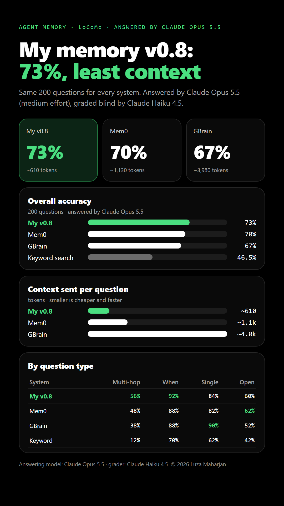
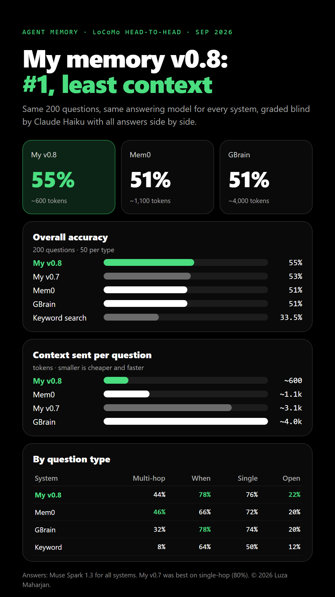

Latest (14 October 2026): v0.9 ties v0.8 on LoCoMo, 60.5% each, answered by Muse Spark 1.3 and graded by Claude Haiku 5.5. Answered by Claude Opus 5.5 (29 September, graded by Claude Haiku 4.5), v0.8 scores 73% with ~610 tokens of context, ahead of Mem0 (70%) and GBrain (67%). Answered by Muse Spark 1.3 (small free model, graded by Claude Haiku): v0.8 55%, Mem0 51%, GBrain 51%. Earlier tests (own coding sessions, LoCoMo v0.6) follow below.
The same 200 LoCoMo questions, 14 October 2026. Answers from Muse Spark 1.3; Claude Haiku 5.5 graded both answers to each question blind and side by side. v0.9's memories were rebuilt from scratch; v0.8's answers are the saved ones from its own run, graded again in each run. v0.8 shows two numbers: first run / second run.
| System | Multi-hop | Temporal | Single-hop | Open-domain | Overall |
|---|---|---|---|---|---|
| My architecture v0.9 (fixed) | 48% | 80% | 82% | 32% | 60.5% |
| My architecture v0.8 (second run) | 52% | 82% | 84% | 24% | 60.5% |
| My architecture v0.8 (first run) | 46% | 80% | 84% | 20% | 57.5% |
| My architecture v0.9 (first try) | 32% | 60% | 74% | 22% | 47.0% |
The first v0.9 try added the date to every log line given to the fact writer, an instruction to turn relative dates into absolute ones, and a "later messages override earlier ones" note for the answering model. The small writer then saved far fewer facts. With all three removed, v0.9 tied v0.8 exactly: 121 correct each, and each won 8 questions the other lost.
The same 200 LoCoMo questions answered by Claude Opus 5.5 (medium effort) instead of the small free model, so scores sit on the same scale as published results. Each system context was rebuilt from the same memories; Claude Haiku 4.5 graded all four answers to each question blind and side by side.
| System | Multi-hop | Temporal | Single-hop | Open-domain | Overall |
|---|---|---|---|---|---|
| My architecture v0.8 | 56% | 92% | 84% | 60% | 73% |
| Mem0 | 48% | 88% | 82% | 62% | 70% |
| GBrain | 38% | 88% | 90% | 52% | 67% |
| Keyword search | 12% | 70% | 62% | 42% | 46.5% |
Run cost: 796 Claude Opus 5.5 calls, 2.31M tokens ($19.11 at list price).
The same 200 LoCoMo questions, now with two popular memory systems added. Every system gets the same answering model (Muse Spark 1.3), the same answer prompt and about the same context budget (~4,000 tokens). Claude Haiku grades all six answers to each question side by side (v0.6, v0.7 and v0.8 of my architecture, Mem0, GBrain, keyword search), without knowing which system wrote which.
| System | Multi-hop | Temporal | Single-hop | Open-domain | Overall |
|---|---|---|---|---|---|
| My architecture v0.8 | 44% | 78% | 76% | 22% | 55% |
| My architecture v0.7 | 40% | 74% | 80% | 18% | 53% |
| Mem0 | 46% | 66% | 72% | 20% | 51% |
| GBrain | 32% | 78% | 74% | 20% | 51% |
| My architecture v0.6 | 28% | 68% | 56% | 12% | 41% |
| Keyword search | 8% | 64% | 50% | 12% | 33.5% |
The same 200 LoCoMo questions with the Rust engine (agentmem-rs, kept for the future) and the Python engine (the main engine), both running architecture v0.8 on the same stored memories. For every question both engines recalled while warm and were timed; answers came from the same model (Muse Spark 1.3) and Claude Haiku graded all answers side by side.
| With Rust | Without Rust (Python) | |
|---|---|---|
| Accuracy (200 questions) | 55% | 55% |
| Context per question | ~528 tokens | ~602 tokens |
| "Not mentioned" answers | 38 | 46 |
| Search time, median | 3.02 s | 3.83 s |
| Search time, average | 3.17 s | 4.01 s |
| Search time, slowest 10% | 3.37 s | 4.56 s |
| Search time, cold start (process start + model load) | ~3.9 s | ~7.8 s |
| Peak RAM | ~293 MB (service) | ~304 MB (process) |
| Multi-hop | Temporal | Single-hop | Open-domain | |
|---|---|---|---|---|
| With Rust | 46% | 72% | 72% | 30% |
| Without Rust (Python) | 42% | 80% | 76% | 22% |
The first test: 60 questions from 15 real Claude Code sessions, run with versions v0.3 to v0.6 (25–26 September 2026). It has not been rerun with v0.8 yet.
Correct counts 1, partly right 0.5. v0.6 made no confident wrong answers. Re-grading all systems together moves earlier scores by up to 2 points; that is the grading noise.
v0.6 reads 13% less than v0.5 while scoring 6 points higher. Plain opencode read about 35,000 per question on its 24.
| System | Accuracy | Confident wrong | Tokens read / question | Steps / question | Time / question |
|---|---|---|---|---|---|
| Plain opencode (greps and reads the logs itself) | 92% | 2 | ~35,000 | ~7 | ~44 s |
| v0.3 | 92% | 0 | ~4,600 | 1 | ~12 s |
| v0.5 | 90% | 0 | ~4,600 | 1 | ~12 s |
| v0.6 | 100% | 0 | ~3,700 | 1 | ~12 s |
| System | Oldest 5 sessions | Middle 5 | Newest 5 | All 60 |
|---|---|---|---|---|
| Keyword search | 88% | 88% | 95% | 90% |
| Rolling summary | 28% | 10% | 70% | 36% |
| v0.3 | 90% | 80% | 75% | 82% |
| v0.4 | 90% | 90% | 80% | 87% |
| v0.5 | 88% | 100% | 82% | 90% |
| v0.6 | 100% | 90% | 98% | 96% |
| Stopped at | Questions | Accuracy | Context per answer |
|---|---|---|---|
| Small summaries + facts + original-log snippets | 29 (48%) | 100% | ~1,590 tokens |
| Topic's original log | 6 (10%) | 100% | ~3,540 tokens |
| Whole-history search (no big summaries) | 25 (42%) | 90% | ~5,780 tokens |
v0.6's vector index is a small local model (bge-small) on the CPU: no tokens, about 12 minutes once, peak RAM 66%.
Agreement with Muse: verify 86%, topic choice 90%, recall enough 76%. In v0.6 Jev also flagged exact-value questions and judged the evidence.
This test uses data the design was never tuned on: LoCoMo (Maharana et al., 2024), 10 long two-person chats with 50 questions in each of 4 categories. Built with the full engine (hypnos). Muse Spark 1.3 answers every system, and Claude Haiku grades, a different model family. Run 2026-09-28.
Context per question: hypnos ~2,240 tokens, keyword search ~380 tokens.
The biggest gap, 3.5×: facts linked through the same people and things help most here.
| Category (50 Q each) | hypnos | Keyword search |
|---|---|---|
| Overall (200) | 41.5% | 33.5% |
| Multi-hop | 28% | 8% |
| Temporal (when) | 68% | 64% |
| Single-hop | 58% | 50% |
| Open-domain | 12% | 12% |
Share-ready images of these results (in the images folder next to this page).


Earlier images (v0.6, coding sessions, the first LoCoMo run) are in images/old.
benchmark/sessions, benchmark/locomo, benchmark/locomo/compare (run_v07.py, run_v08.py, run_rust.py, run_opus.py, run_v09.py) in the agent-memory-architecture repo.